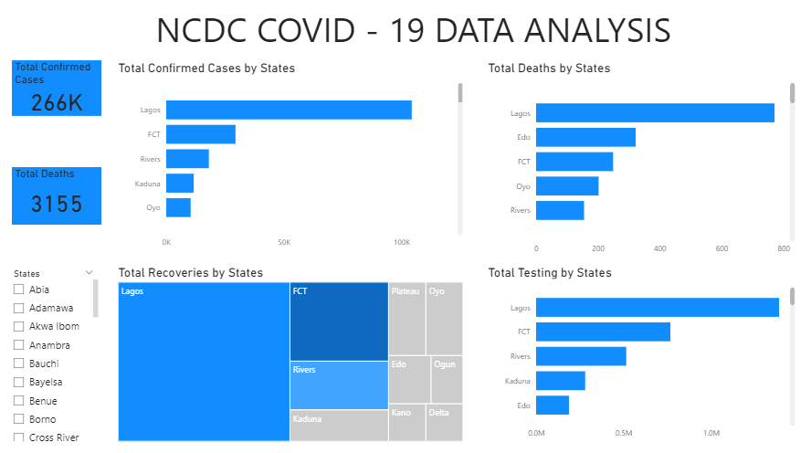
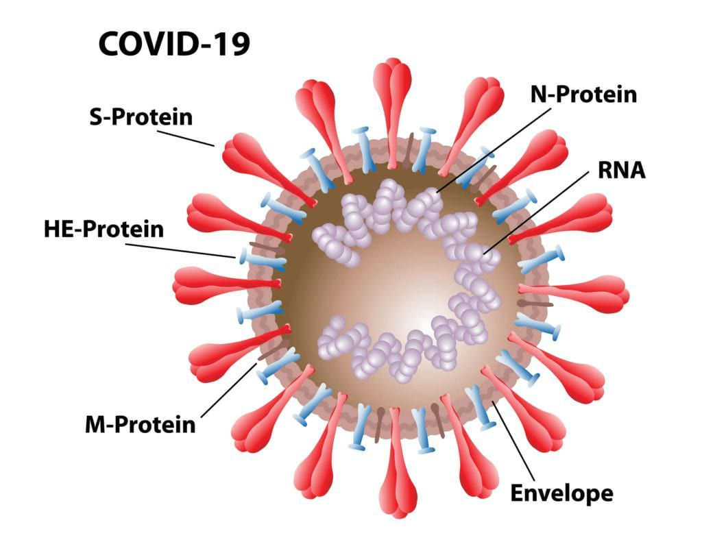

In the course of this project, I conducted comprehensive analyses encompassing customer behavior, product performance, and sales trends. These insights were pivotal in pinpointing key areas for business enhancement, including boosting customer satisfaction and refining sales strategies.

In this project, I work with the raw cholera outbreak data, conducting a series of transformations in PowerBI. The primary objective is to analyze the death rates resulting from the cholera outbreak.

In this case study, I developed a PowerBI dashboard aimed at identifying the demographics most vulnerable to the impacts of Covid-19. The purpose of this analysis is to examine the varied manifestations of the pandemic, extracting valuable insights to enhance the effectiveness of public health emergency responses.

This project focuses on the impact of COVID-19 on airport traffic. I explored the influence of COVID-19 on airport traffic patterns across various countries, assessing variations in traffic within states and between different airports. The analysis aims to provide insights into how the disease affects airport traffic patterns, enabling decision-makers to tailor travel plans according to the current situation in each country.